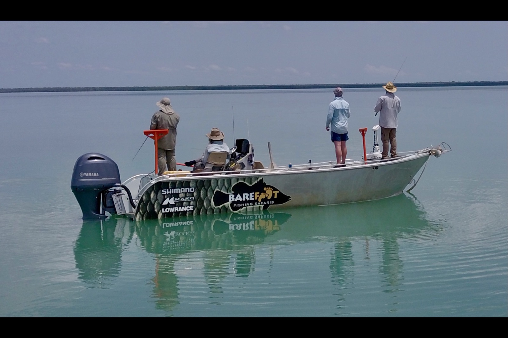
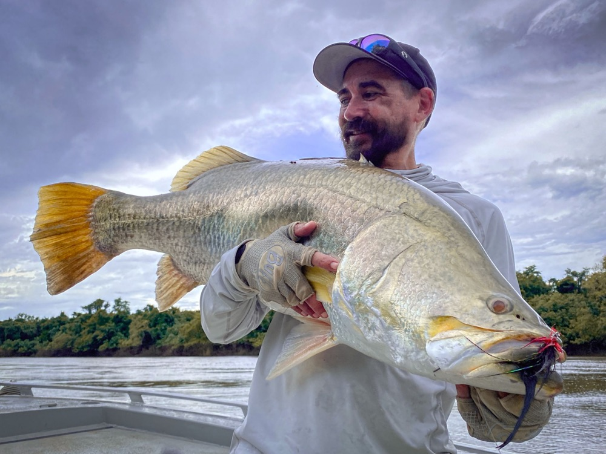
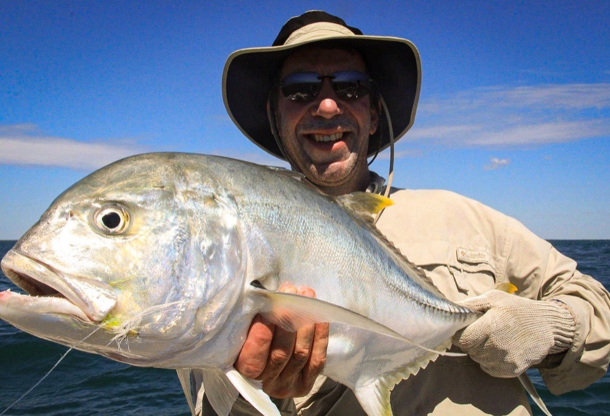
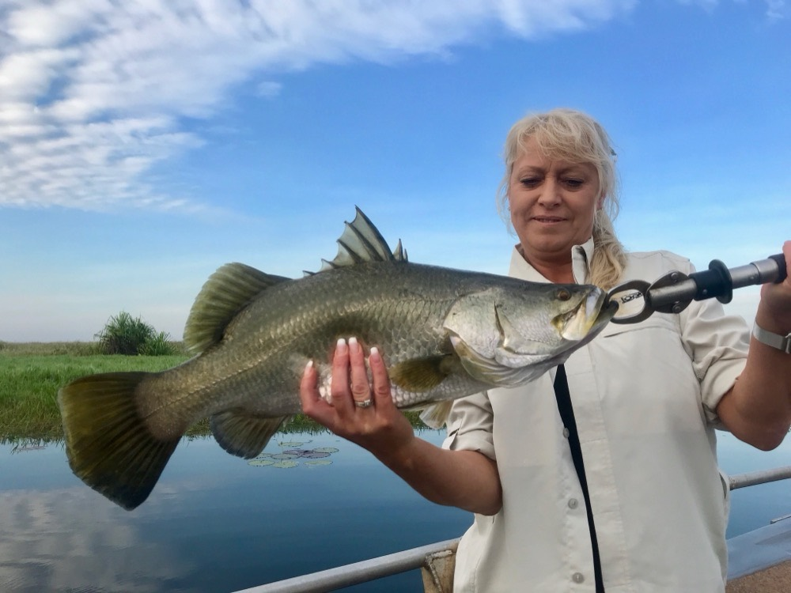
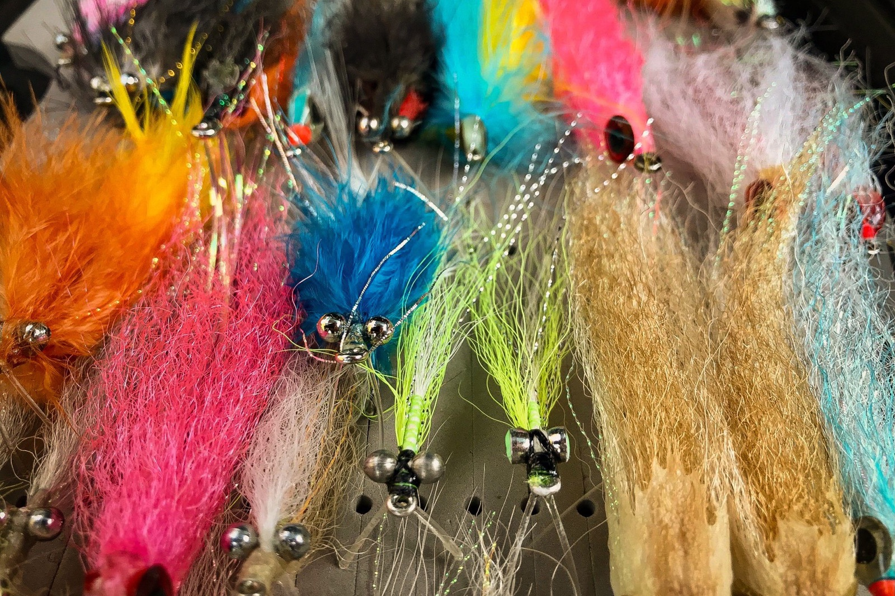

Barra know-how / A season guide
By Watty · Guiding the Top End since 2011 · Updated November 2026
"When's the best time to come?" It's the question I get more than any other. First thing to know: there's no closed barra season in the Territory — you can chase barramundi here any month of the year, which isn't the case in Queensland. What changes is how they fish. The Top End runs on three seasons, and each one fishes completely differently. Here's how I read them — so you can pick the trip that suits you.
Queensland closure / 1 Nov – 31 Jan
Queensland shuts its east-coast barra fishing from 1 November to 31 January, and the Gulf from 7 October. The Territory doesn't — the only seasonal closure is the lower Daly River, 1 October to 31 January. October to December is our build-up: hot, humid, and it can go off — big fish feeding up ahead of the wet. If the closure down south has left you with a long summer and nothing to cast at, a build-up trip out of Darwin is the answer.
Late Feb – Early June
If you want the best shot at both numbers and big barra, this is it. As the wet-season floodwaters fall and drain off the floodplains, they drag bait into the creeks and mouths — and the barra know it. They stack on the drains to feed.
It's still humid and can be wet — but the fishing's worth it. This is our Run-Off Barra season, and it books out early.

June – August
The dry is the backbone of the safari calendar, and for good reason: the water clears, the tides settle, and the patterns stabilise. It's the easiest fishing to plan around and the most comfortable to be out in.
This is prime time for our Dundee & Bynoe Harbour trips and clean-water fly fishing — sight-casting barra in shallow water.

September – December
The build-up is the pre-monsoon stretch — heat, humidity and the first storms. It's uncomfortable, but that building energy can absolutely ignite the feeding. The bite windows get shorter, but once you learn to read them, they're surprisingly predictable.
Stick to one estuary or bay and watch how each tide stage changes the water colour and bait movement — that's how you crack it.


Good questions
No. Recreational barra fishing is open year-round in the Northern Territory. The one seasonal closure worth knowing is the lower Daly River, closed from 1 October to 31 January to protect spawning fish. Queensland is different: its east coast closes from 1 November to 31 January, and the Gulf of Carpentaria from 7 October to 31 January.
All year, in three seasons that fish differently: the run-off from late February to early June, the dry from June to August, and the build-up from September to December. I guide from February to the end of November.
March and April. That's the heart of the run-off, when the floodplains drain back into the rivers and the fish stack up on the colour changes and the drains. It's the window I'd tell anyone to build a trip around, and the best tides book up to two years ahead.
Yes, if you can handle the heat. October to December is hot and humid, with storms building most afternoons, and the fish feed up ahead of the wet. It's a boom-or-bust season — when it goes off, it goes off.
As early as you can for the run-off — the best March and April tide windows go up to two years out. The dry and the build-up have more room, usually a few months ahead.
The run-off is when the wet-season floodwaters fall and drain off the floodplains, pulling bait into the creeks and river mouths. Barra stack on the drains and rock bars to feed, which makes it the most productive time of year in the Top End.
Yes — the dry season (June to August) is the backbone of the safari season. The water clears and tides settle, so the fishing is consistent and the weather is comfortable. Harbours fire on the spring run-outs and the rivers fish well on the clean neap tides.